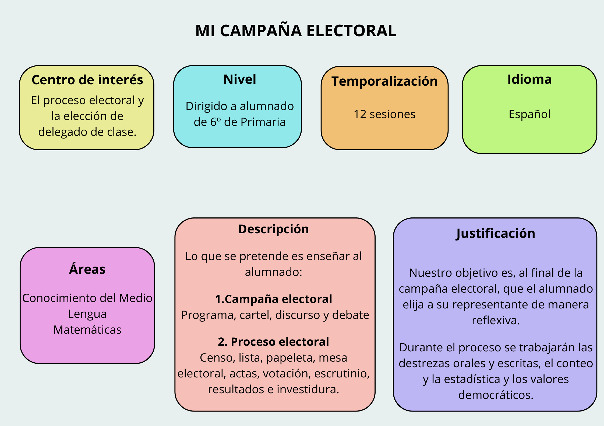
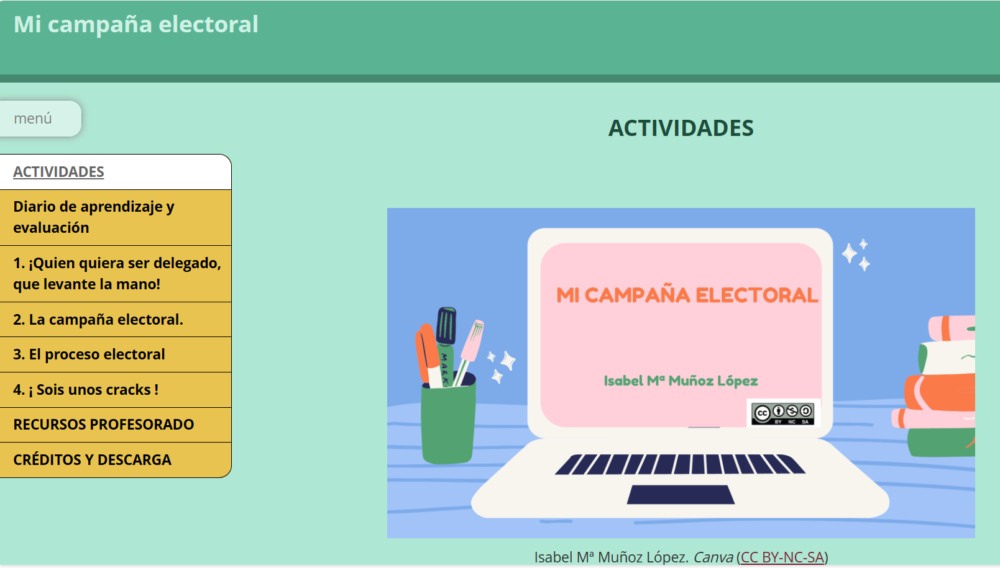
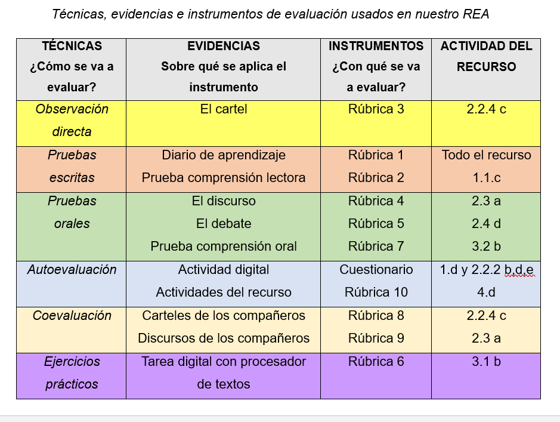

Propuesta didáctica

Estructura del recurso

Objetivos didáctivos
• Incorporar las Tecnologías de la Información y la Comunicación y el uso de Recursos Educativos Abiertos en el trabajo diario del aula.
• Favorecer que el alumnado pueda desarrollar su competencia digital para aplicarla a todos los ámbitos de su vida.
• Fomentar en el alumnado el respeto a los valores democráticos y su participación activa en el ámbito escolar.
• Trabajar la comprensión y expresión oral y escrita del alumnado.
• Trabajar con el alumnado la recogida, organización y representación de la información.
Metodología
La metodología de nuestra situación de aprendizaje será una metodología activa basada en el desarrollo competencial con el objetivo de que nuestro alumnado alcance un aprendizaje significativo, así como para promover su autonomía, responsabilidad y reflexión sobre su propio proceso de aprendizaje. Este SdA se desarrollará de manera transversal a través de las áreas de Lengua Castellana, Conocimiento del Medio Natural, Social y Cultural y Matemáticas. Su principal objetivo será fomentar, principalmente, las cuatro destrezas relacionadas con la competencia en comunicación lingüística, es decir, la comprensión y expresión oral y la comprensión y expresión escrita. Por otro lado, se pretende desarrollar en el alumnado la competencia ciudadana trabajando con el alumnado todo el proceso electoral, siendo la tarea final la elección del delegado de clase. Finalmente, también se pretende desarrollar en el alumnado la competencia matemática y en ciencia, tecnología e ingeniería.
Para ello, se llevarán a cabo actividades de activación, cuyo objetivo será tratar de evocar los conocimientos previos del alumnado en las diferentes áreas.
Los nuevos contenidos con los que el alumnado no ha tenido contacto en cursos anteriores se trabajarán a través de las actividades de exploración.
Finalmente, en las actividades de estructuración, el alumnado podrá afianzar y asimilar los contenidos trabajados durante la fase de exploración.
Técnicas, evidencias e instrumentos de evaluación

Descripción de las competencias clave, saberes básicos y relación de los criterios de evaluación y saberes básicos con las competencias específicas en nuestro REA.
Si pincha en el enlace podrá acceder a la descripción de las competencias clave, saberes básicos y relación de los criterios de evaluación y saberes básicos con las competencias específicas en nuestro REA.

Herramientas digitales utilizadas
En la elaboración de nuestro REA se han incorporado las siguientes herramientas digitales:
- Google Classroom
- Youtube
- Genially
- Conker IA (creador de cuestionarios con Inteligencia Artificial)
- Gooly IA (buscador a través de IA para niños).
- Canva IA (creador de contenido a través de IA)
- Spechgen.io. IA (conversor de texto a voz con IA)
- Procesador de textos
- Diccionario digital RAE